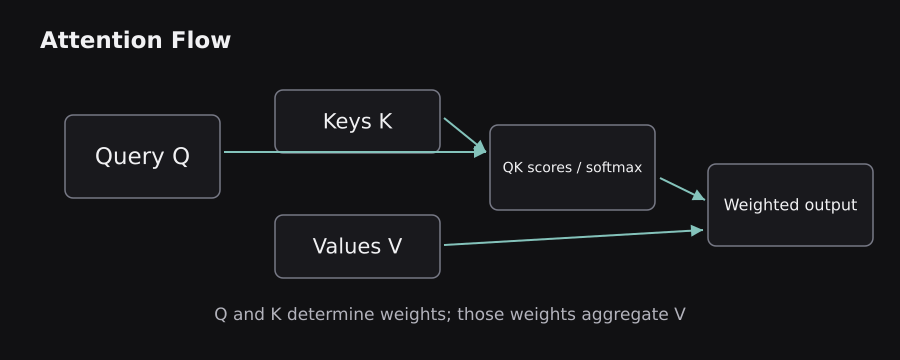
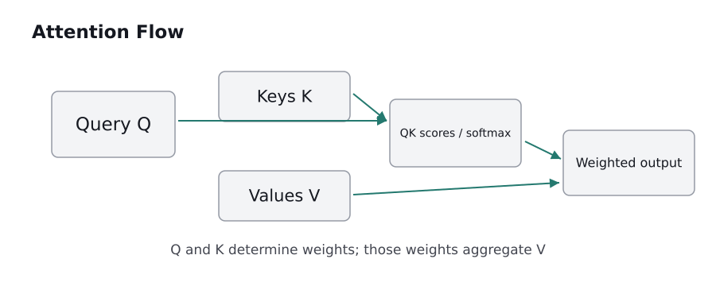
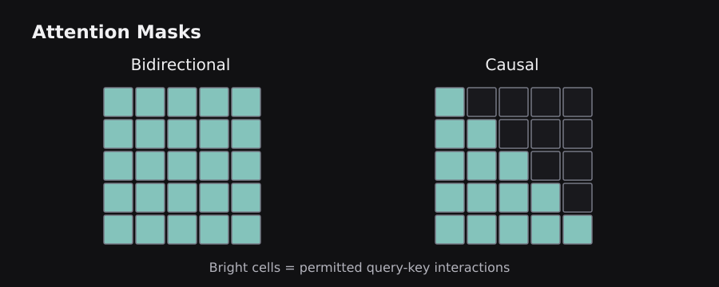
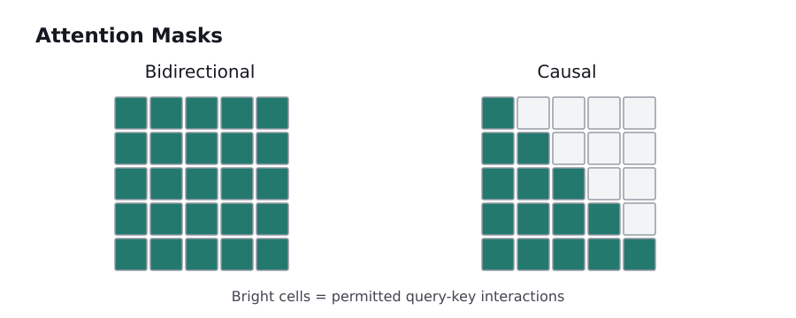

Transformers are easier to understand if you remember a single idea: every token should be able to gather relevant information from other tokens without waiting for an RNN to pass it along. We build the architecture from embeddings to complete encoder and decoder stacks, using the original Transformer as the reference design.
7.0 — Why recurrence gave way to self-attention
An RNN consumes tokens in order. If the hidden state for the seventh word depends on the sixth, a processor cannot calculate every hidden state independently at once. Long dependencies also require information to survive many state updates. The Transformer uses attention as its main sequence-mixing mechanism instead of an RNN, enabling parallel processing across input positions during training.
In self-attention, a token computes how strongly it should draw information from other tokens. Consider “The animal was tired because it had run.” When processing “it,” useful context includes the earlier word “animal.” Direct attention can connect those positions even when many unrelated words separate them.
There is an important qualification: an autoregressive Transformer still generates one new token at a time. Parallelization applies to evaluating known input or training target positions under suitable masks, not to making unknown future tokens appear simultaneously during ordinary causal decoding.
The original 2017 paper proposed an encoder–decoder network using attention and position-wise feed-forward networks. Later models frequently use only the encoder or only the decoder. Primary source: Vaswani et al., Attention Is All You Need.
7.1 — Token embeddings and sequence positions
A Transformer starts with token IDs produced by a tokenizer. Each ID indexes a learned embedding matrix of shape (vocabulary_size, model_dimension). If the model dimension is 512, each token is represented by a vector of 512 numbers before context is mixed into it. A batch of token embeddings has shape (batch, sequence_length, model_dimension).
Attention alone needs help distinguishing order. Without a position signal, standard self-attention is permutation-equivariant: rearranging input vectors rearranges the corresponding outputs, but does not inherently tell the model which order is linguistically meaningful. The original Transformer adds a sinusoidal positional encoding. Some later models learn absolute position embeddings; others modify attention using relative positions or Rotary Position Embeddings (RoPE).
For a concrete mental model, “dog bites person” and “person bites dog” contain the same tokens but different positions and relationships. Positional information lets the model distinguish them. However, a position representation is not the same thing as understanding syntax: it gives the model a learnable clue, not a ready-made grammatical rule.
Practical implication: maximum context length, tokenizer choice, and positional design are part of a model's architecture. A model with a long context window is not automatically reliable at remembering or retrieving information from every location in that window.
7.2 — Query, key, and value without the mystery
Every token representation is projected into three learned vectors: Query (Q), Key (K), and Value (V). A query expresses what information a position seeks. Keys are compared with queries to estimate relevance. Values contain information that is actually combined into the output. These names are a useful analogy to information retrieval, though the vectors are learned numerical features rather than human-written search requests.
For an input matrix X, the projections are Q=XW_Q, K=XW_K, and V=XW_V. The weight matrices are learned during training. If a token's query has a large dot product with another token's key, that pair receives a higher raw relevance score. The score is then normalized together with scores for other eligible tokens.
Imagine the phrase “A tired engineer fixed the server.” To build a contextual vector for “fixed,” one attention head may emphasize “engineer” and “server.” Another head might learn different regularities. There is no guarantee that any single head maps neatly to a human grammatical label.
The crucial detail is that the output is a weighted combination of value vectors. It is not merely a lookup of the single best-matching word, and the tokens themselves are not replaced by textual snippets.
 
7.3 — Scaled dot-product attention, one operation at a time
The central formula is Attention(Q,K,V) = softmax(QKᵀ / √dₖ) V. Read it from left to right. First, QKᵀ creates a table of query–key similarity scores. Second, division by √dₖ prevents typical dot products from becoming excessively large when key dimensions grow. Third, softmax turns each query's allowed scores into nonnegative weights summing to one. Finally, multiplying by V produces a weighted combination of information.
For a tiny example, suppose one query's scores after scaling are [2, 0]. Softmax produces approximately [0.881, 0.119]. If values are scalar numbers [10, 20], the weighted result is approximately 11.19. In a real network, values are vectors and all positions are processed through matrix operations.
A minimal NumPy illustration of just this computation is:
import numpy as np
scores = np.array([2.0, 0.0])
weights = np.exp(scores - scores.max())
weights /= weights.sum()
print(np.round(weights, 3))
# [0.881 0.119]
Subtracting the maximum score before exponentiation improves numerical stability without changing the softmax result. Attention can mix information between tokens, but it does not by itself perform every useful nonlinear transformation; the feed-forward sublayer handles much of that work.
7.4 — Multi-head attention and tensor shapes
Multi-head attention (MHA) runs several attention computations in parallel over separate learned projections. If d_model=512 and there are eight heads with equal dimensions, each head can use a 64-dimensional query/key space. The head outputs are concatenated and projected back to the model dimension.
Why multiple heads? A single similarity function offers only one view of the relationships between tokens. Multiple heads give the model several learned representational subspaces. One head might attend to nearby function words; another might often capture longer-range associations. These patterns emerge through optimization; they are not hand-programmed.
The useful shape transformation is (batch, length, d_model) → (batch, heads, length, head_dimension) for the query, key, and value projections. Each attention matrix has shape (batch, heads, query_length, key_length). This explains where quadratic sequence-length costs arise: doubling sequence length multiplies the number of query–key pairs by approximately four when both dimensions double.
A head is not a separate independent language model. Heads are learned jointly and mixed back together. More heads also do not automatically mean greater performance; model dimension, data, training schedule, and objective matter.
7.5 — Masks: who is permitted to attend to whom?
An attention mask prevents certain token pairs from interacting. A padding mask blocks positions inserted only to make variable-length sequences fit into a common rectangular batch. Without it, useful tokens could inadvertently attend to meaningless padding. In many implementations, disallowed scores receive a very negative number before softmax, yielding essentially zero attention weight.
A causal mask forbids a position from attending to later positions. With tokens [I, love, tea], the model predicting the third position may use earlier information but must not peek at a fourth target token. The allowed positions form a lower-triangular attention pattern. This is essential for correct autoregressive language-model training.
A full bidirectional encoder typically lets every genuine token attend to every other genuine token. A causal decoder restricts each target position to known earlier targets. A source-to-target cross-attention layer can additionally attend to the encoder's output when the architecture includes an encoder.
A frequent mistake is to confuse padding masks and causal masks. One removes meaningless data; the other enforces the task's information boundary. Both may be needed simultaneously. Misconfigured masks can create training–inference mismatch or cause the model to learn from future answers.
 
7.6 — Feed-forward blocks, residual paths, and normalization
Attention lets each token combine information across positions. A position-wise feed-forward network (FFN) then transforms each token's hidden vector independently with learned linear layers and a nonlinearity. In the original Transformer, this was approximately FFN(x)=max(0,xW₁+b₁)W₂+b₂. The intermediate dimension is typically larger than the model dimension.
Residual connections add a sublayer's input to its output: x + Sublayer(x). This creates a short path for information and gradients through deep networks. Layer normalization rescales each token's feature dimensions, helping training remain numerically stable. Together, these operations make it practical to stack many blocks.
The original architecture used post-normalization after residual addition. Many modern decoder-only models use pre-normalization, applying normalization before attention or FFN and adding the residual afterward. Some use RMSNorm, a simpler alternative that scales by root-mean-square magnitude without subtracting the feature mean. Choices affect optimization and implementation; one design is not universally best.
Important separation: attention mixes across tokens; FFNs mix within the feature dimensions of a token. Residual connections preserve a path for the previous representation. Normalization controls activation scale. These roles complement each other.
7.7 — The complete encoder stack
A Transformer encoder layer usually contains bidirectional multi-head self-attention followed by a position-wise FFN, with residual connections and normalization around the components. Stacking these layers repeatedly contextualizes token embeddings. A final token vector can depend on information from many input locations.
The original encoder–decoder Transformer uses positional input embeddings and a stack of such encoder layers. The encoder's output is often called memory: a sequence of contextualized vectors that the decoder can inspect. It is not a database or a durable personal memory. The word merely describes the representation of the processed source sequence.
For a review-classification model, a classification head can take a pooled representation and produce class logits. For entity recognition, a classifier can operate on each token's final representation. For semantic retrieval, an encoder can be trained to produce sentence or passage embeddings designed for similarity search. These heads and objectives are task-specific additions.
Encoder advantage: full bidirectional context suits language understanding when the entire input is already known. Constraint: it is not, by itself, the typical autoregressive next-token generation architecture.
7.8 — The complete decoder and cross-attention
The original Transformer decoder is different from the encoder. Its first attention block uses a causal mask so target positions cannot see the future. It then performs cross-attention using queries from the decoder and keys/values from the encoder memory. Finally, a feed-forward block transforms the result. Residual and normalization paths wrap these sublayers.
A translation example makes the distinction concrete. The English source sentence enters the encoder. The French decoder generates its translation progressively. At each step, decoder self-attention sees the target prefix, while cross-attention can inspect the complete encoded English sentence. This permits a flexible alignment between source and target words.
Teacher forcing means training can process all known target positions in parallel under a causal mask. During generation, the next target token is unknown and must be generated after the previous token; key/value caching can avoid repeating unnecessary computations. Decoder-only models, such as GPT-style systems, omit a separate encoder and generally omit encoder–decoder cross-attention.
A useful diagram of the original architecture is source tokens → encoder → source memory → decoder cross-attention → target-token probabilities, with the target prefix also feeding masked decoder self-attention.
7.9 — From logits to the next token
After the final model block, a linear output projection turns a token's hidden vector into one score per vocabulary item. These raw scores are logits. Softmax converts them into probabilities; a decoding rule then selects or samples the next token. The token is appended to the generated sequence, and the process repeats until a stopping condition is met.
Greedy decoding selects the highest-probability token at each step. Temperature adjusts distribution sharpness before sampling. Top-k restricts sampling to a fixed number of candidates; top-p (nucleus sampling) restricts it to the smallest set whose cumulative probability reaches a threshold. Beam search maintains several partial hypotheses and is common in some sequence-to-sequence tasks. Each strategy trades diversity, speed, and likelihood in different ways.
Higher-probability text is not automatically more accurate, safe, or relevant. A language model estimates token likelihood under its training objective; factual correctness must be assessed separately, especially for changing external facts.
Chapter synthesis: a Transformer is built from token and position representations, learned Q/K/V projections, scaled attention, multiple heads, masks, FFNs, residual paths, and normalization. The same general block can be arranged as an encoder, a decoder, or both. The next chapter studies what different pretraining objectives make those architectures good at.
Sources and further reading
These sources supplement the original explanations. The uploaded PDFs and cheatsheets informed the topic coverage; their illustrations and prose are not republished.